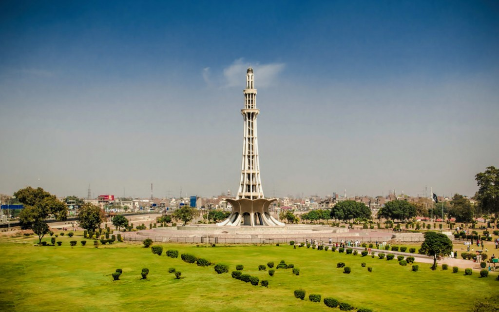
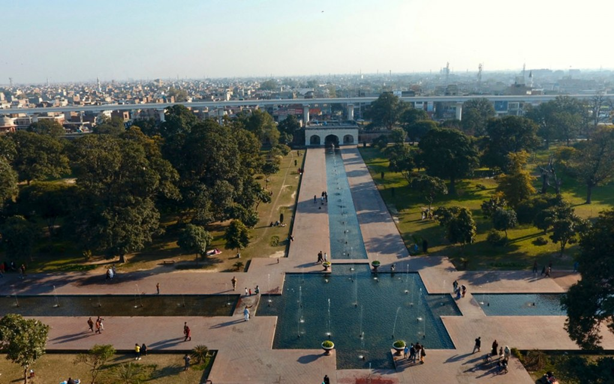

Punjab, province of eastern Pakistan. It is bordered by the Indian state
of Jammu and Kashmir to the northeast,
the Indian states of Punjab and Rajasthan to the east, Sindh province to
the south, Balochistān and Khyber Pakhtunkhwa provinces to the west,
and Islamabad federal capital area and Azad Kashmir to the north. The
provincial capital, Lahore, is located in the east-central region,
near the border with India. The name Punjab means “five waters,” or
“five rivers,” and signifies the land drained by the Jhelum, Chenab,
Ravi, Beas, and Sutlej rivers, which are tributaries of the Indus River.
Punjab is Pakistan's second largest province,
after Balochistān, and the most densely populated. Area 79,284 square
miles (205,345 square km). Pop. (2011 est.) 91,379,615.
EXPLORING THE FAMOUS TOURIST ATTRACTIONS IN PUNJAB:
These are some of the some popular as well as historical places to visit
in Punjab. So, if you love travelling, make sure to add these tourist
attractions to your travel bucket list.
Badshahi Mosque
Lahore Fort
Minar-e-Pakistan
Shalimar Gardens
BADSHAHI MOSQUE:
When it comes to the most renowned historical places in Punjab, Badshahi Mosque is probably the first name that
pops into your mind, right? Located in the Walled City of Lahore, the majestic Badshahi Mosque is considered one
of
the largest mosques in Pakistan with the capacity to accommodate about 1 lakh people at the same time.
LAHORE FORT:
If you have ever visited Lahore, there is a good chance that you have already taken a trip to the centuries-old
Lahore
Fort located in the Walled City next to Badshahi Mosque. More popularly known as Shahi Qila, it is one of the most
historic forts in Pakistan. It also enjoys the status of being one of the six UNESCO World Heritage Sites in
Pakistan.
MINAR-E-PAKISTAN:

Minar-e-Pakistan is one of the most important and historically significant places to visit in Lahore. Standing
tall
at
approximately 230 feet, this stunning tower is situated in the beautiful Iqbal Park – formerly known as Minto Park
–
in the heart of Lahore. Also known as the ‘Tower of Pakistan,’ this landmark commemorates the momentous occasion
when the Pakistan Resolution (Qarardad-e-Pakistan) was signed on March 23rd, 1940, during a session of All India
Muslim League. This historic resolution led to the creation of Pakistan and is celebrated each year as ‘Pakistan
Day.’
SHALIMAR GARDENS:

One of the only remaining gardens built during the Mughal reign in the once-imperial city of Lahore, Shalimar
Gardens were added to the list of UNESCO World Heritage Sites in 1981 along with Lahore Fort. It was
commissioned by Mughal Emperor Shah Jahan in the 17th century and is considered one of the top tourist attractions
in Punjab. The design of these gardens, also known as Shalimar Bagh among the locals, was heavily influenced by
the
Shalimar Gardens in Kashmir, which were constructed by Emperor Jahangir, Shah Jahan’s processor and father.